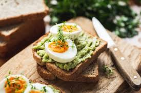
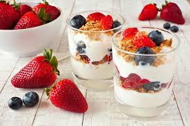

Cafés da Manhã
Deliosos cafés da manhã com rápido tempo de preparação.

Panqueca de Banana e Aveia
Uma deliciosa panqueca de banana com aveia para começar bem o dia!

Torrada Integral com Abacate e Ovo
Para os amantes de torradas na manhã, uma receita deliciosa e prática.

Iogurte com Granola e Frutas
Delicioso para dias mais quentes, rápido e saboroso!